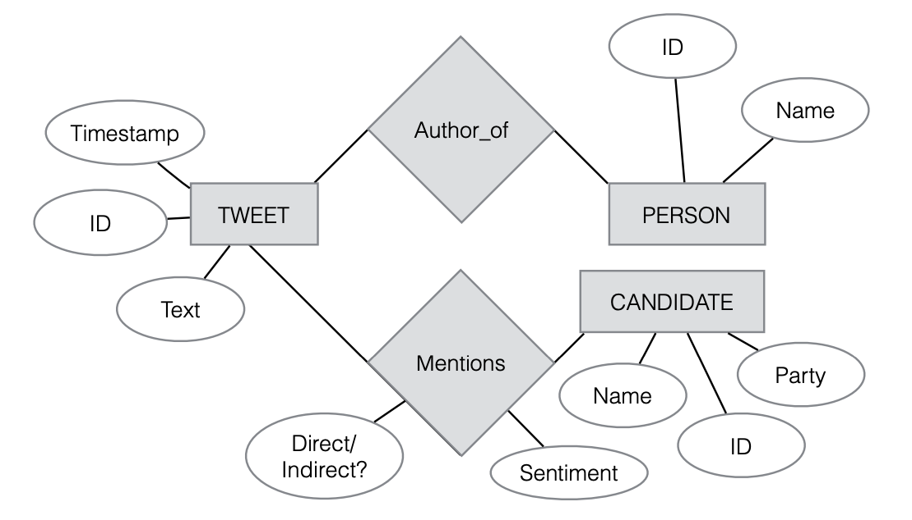

Discussion 3 - 02/08
SQL tutorial
The following contents are from cs1951A and w3school
SQL slides: Slides SQL assigment: Assignment
Basic concepts
- Data definition language: Define types and relation
- Data Manipulation and Query language
basic logic: create a table or multiple and play with them.
Data types
Reference: SQL data types
 https://www.journaldev.com/16774/sql-data-types
https://www.journaldev.com/16774/sql-data-types
Examples
https://twitter.com/yezhengSTAT
 brown cs1951A
SQLite3 in Python
The following tutorial follows sqlite3 If you know a more popular one, just let me know :)
Start connect to sqlite3 server
Python is an object-oriented language OOP, you should learn the basic concept for this term.
To run our sqlite3, you need to first connect to a local/remote database via .connect(NAME)
Once you have a Connection, you can create a Cursor object and call its execute() method to perform SQL commands
# Python3
conn = sqlite3.connect(NAME)
cursor_obj = conn.cursor()
cursor_obj.execute(SQL_COMMAND)
Create a TABLE
To create a SQL TABLE, first you need to CREAT TABLE, also declare columns’ name and type
--SQLite3
CREATE TABLE table_name (
column1 datatype,
column2 datatype,
column3 datatype,
....
);
In Python, if you want to run a sql command, you need to pass a string to cursor.execute(SQL_COMMAND: string)
# Python3
command = """
CREATE TABLE table_name (
column1 datatype,
column2 datatype,
column3 datatype,
....
);
"""
cursor_obj.execute(command)
Show tables in current database
To show tables, in sqlite3 console you can use .tables, more command from .help
--SQLite3
.tables
or
--SQLite3
SELECT name FROM sqlite_master WHERE type='table';
Here the SELECT command is select object from database, once you executing a SELECT statement.
Equivalent, in python, we can do
# Python3
command = "SELECT name FROM sqlite_master WHERE type='table';"
cursor_obj.execute(command)
print(cursor_obj.fetchall())
You can either treat the cursor as an iterator, call the cursor’s fetchone() method to retrieve a single matching row, or call fetchall() to get a list of the matching rows.
Insert one record in database
Once we create our base table, we can start insert records into the database.
In sqlite3, it is possible to write the INSERT INTO statement in two ways.
The first way specifies both the column names and the values to be inserted:
--SQLite3
INSERT INTO table_name (column1, column2, column3, ...)
VALUES (value1, value2, value3, ...);
or
--SQLite3
INSERT INTO table_name
VALUES (value1, value2, value3, ...);
Relational database
Different Key types
Primary key is a set of one or more fields/columns of a table that uniquely identify a record in database table. It can not accept null, duplicate values. Only one Candidate Key can be Primary Key.
Foreign key is a field in database table that is Primary key in another table. It can accept multiple null, duplicate values. For more help refer the article Difference between primary key and foreign key.
Consider if you are hiring by amazon, how did you manage amazon data? how many tables do you need, how to link them together?
--SQLite3
CREATE TABLE Customers (
CustomerID INT PRIMARY KEY,
Name VARCHAR(1000)
);
CREATE TABLE Products (
ProductID INT PRIMARY KEY,
price NUMERIC,
original VARCHAR(1000)
);
CREATE TABLE Orders (
OrderID INT PRIMARY KEY,
size INT,
CustomerID INT,
ProductID INT,
FOREIGN KEY (CustomerID) REFERENCES Customers(CustomerID),
FOREIGN KEY (ProductID) REFERENCES Products(ProductID)
);
Why?
Link TABLES together!
Practice
In the Assignment, there is a database named people.db, with the name, age, ID, and occupation of some students. Here we can create these three tables by ourself.
people_main(ID INTEGER, name TEXT, occupation TEXT, age INTEGER)
people_likes(ID1 INTEGER, ID2 INTEGER)
people_friends(ID1 INTEGER, ID2 INTEGER)
- Create table
people_main,people_likesandpeople_friends. - Consider what is the primary key in
people_main.
The table people_likes, based on following roles:
- ID1 and ID2 should from people_main table
- ID1 likes the person with ID2
- Suppose each person can only like one person
Should we have a key/keys for this table? If so, what type of key/keys?
people_friends should based on:
- ID1 and ID2 should from people_main table
- ID1 != ID2
- If person with ID1 is friend with ID2, the revers should also be true
How about people_friends?